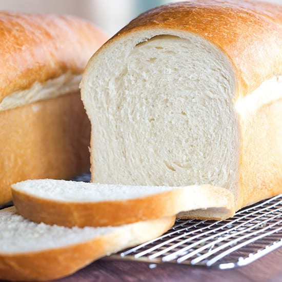
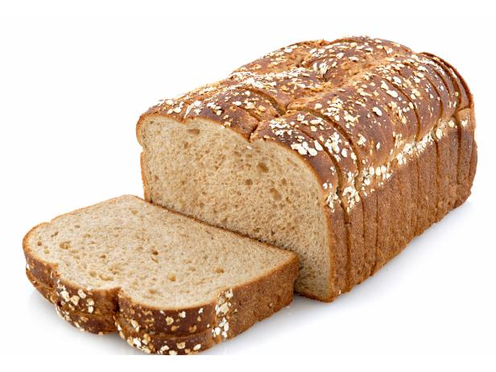
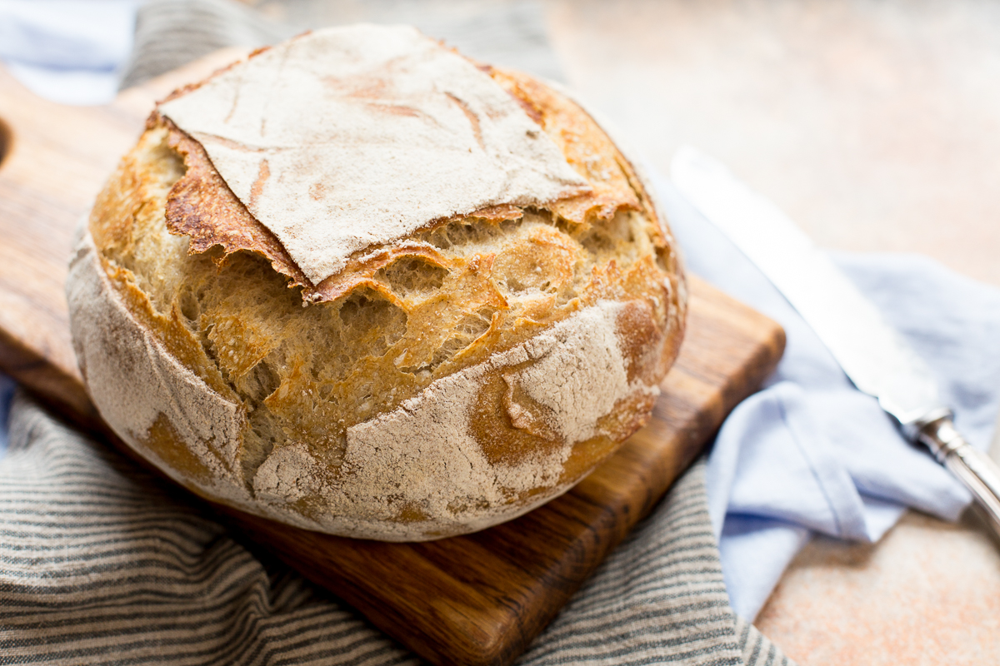
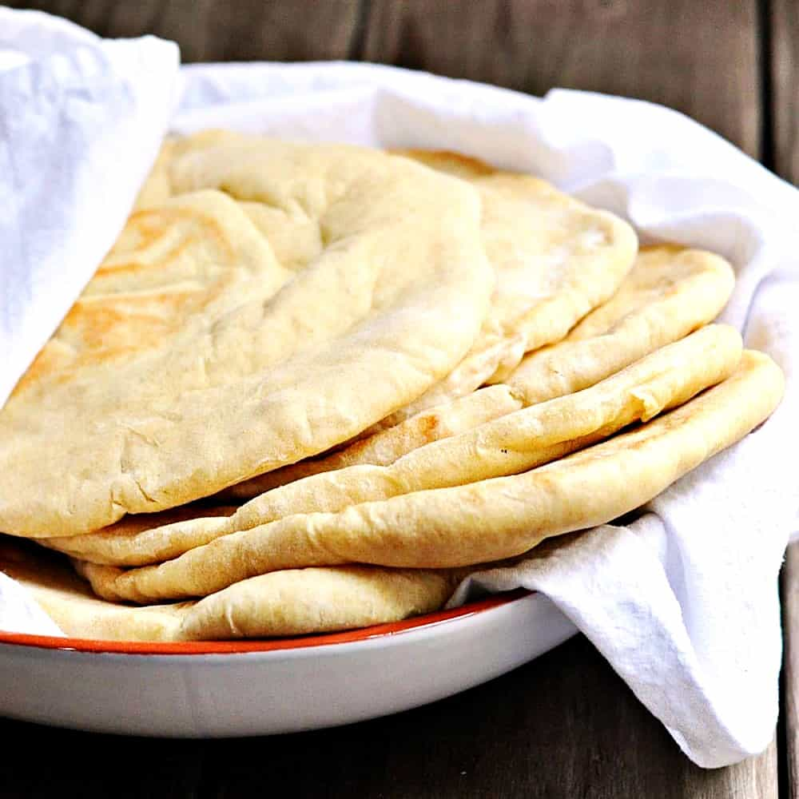
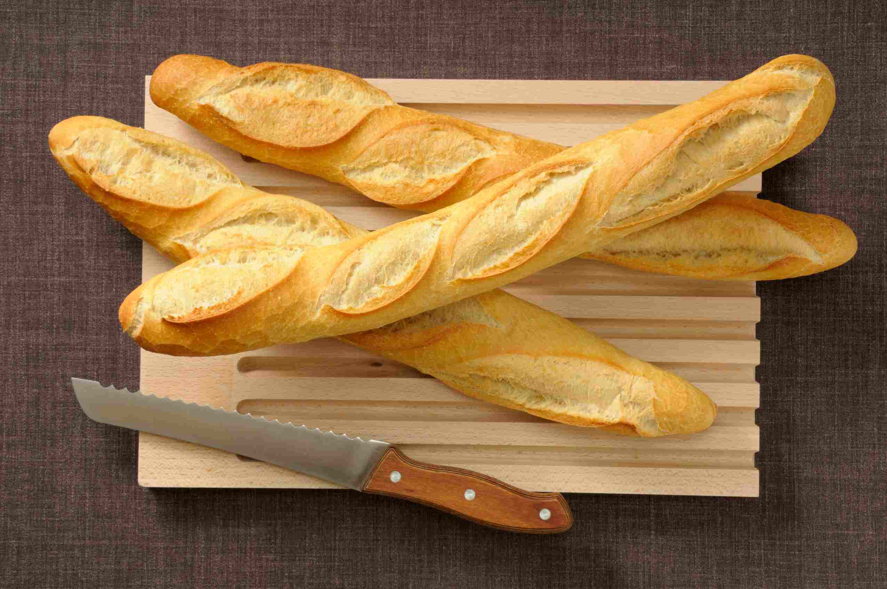
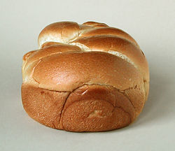
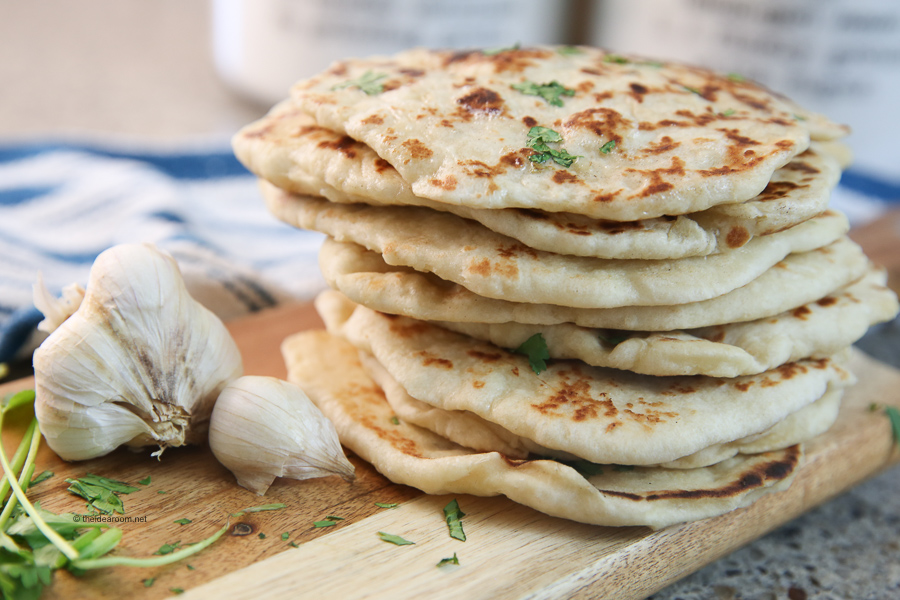
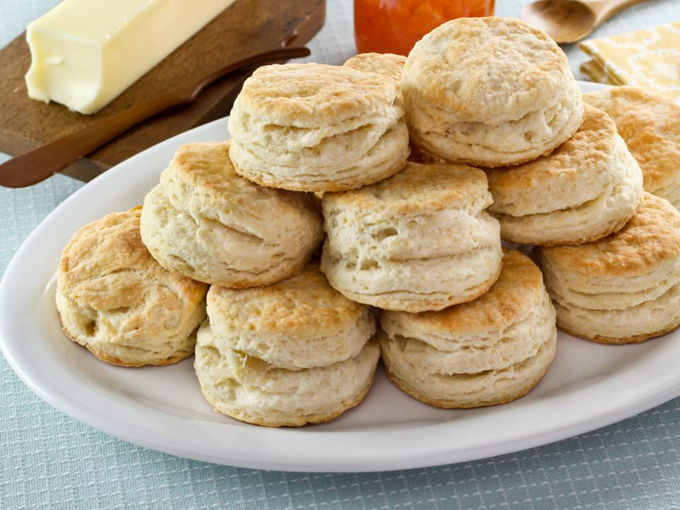
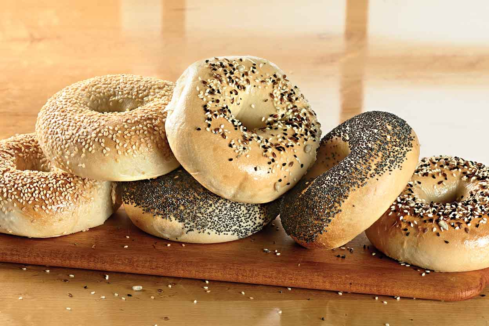
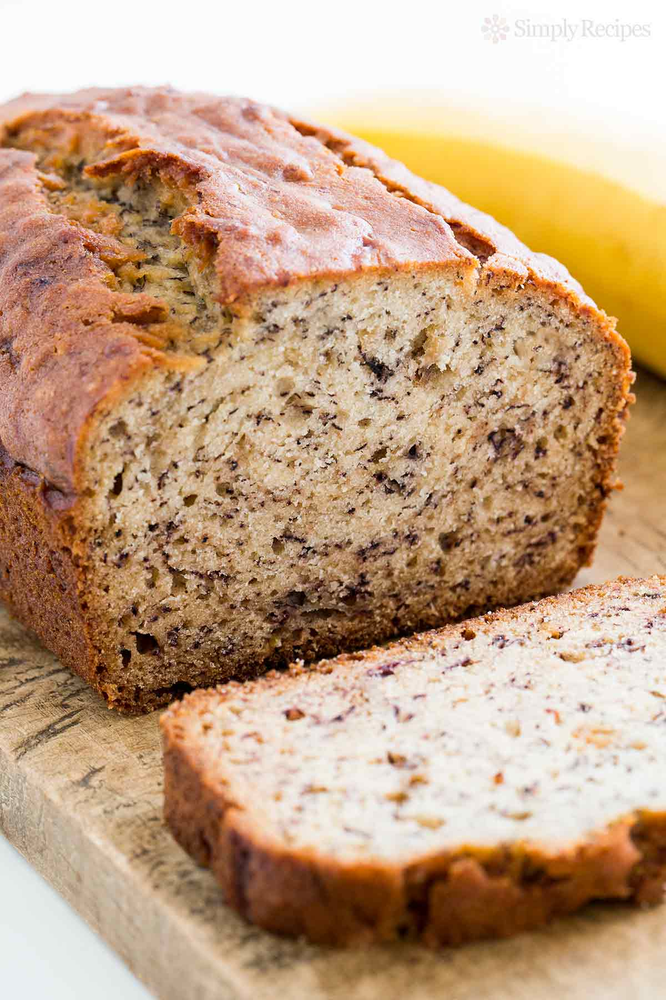

| White Bread |
The most basic of all breads. This bread is the most typical type of bread used for toast and sandwiches. |
*** |
 |
| Whole Wheat Bread |
This type of bread is the wanna be white bread, but attempting be healthy. Basically just a lower tier white bread. |
** |
 |
| Sourdough Bread |
This bread has a unique taste that some prefer while others believe it is nasty. This type of bread makes quality sandwiches and a nice side for a meal. |
**** |
 |
| Pita Bread |
The perfect pocket for different vegetables and meats which puts a unique twist on the sandwich. |
**** |
 |
| Baguettes |
The highest quality dinner bread that goes with any dinner. Another plus is the size of the bread. |
***** |
 |
| Brioche |
Another variation of the dinner bread and is a delicious roll. This can also substitute normal white bread for a different sandwich wrapper. |
***** |
 |
| Naan Bread |
A Middle Eastern and Indian bread that goes perfect with dips and is still delicious alone. Although it tastes great, it is very easy to mess up the baking process. |
**** |
 |
| Biscuits |
The real gold. This type of bread is unique and is even more exemplory if made flaky. This type of bread can be eaten at anytime by itself. |
***** |  |
| Bagels |
Perfect breakfast that can be topped with creamed chesse, butter, jelly, and many other condiments. Additionally, bagels come in many flavors and can be turned into sandwiches. |
**** |
 |
| Banana Bread |
Rather than the plain bread flavors that all taste very similar, banana bread incorporates all the deliciousness in bananas and plugs them into the perfectly formatted loaf of bread. |
***** |
 |